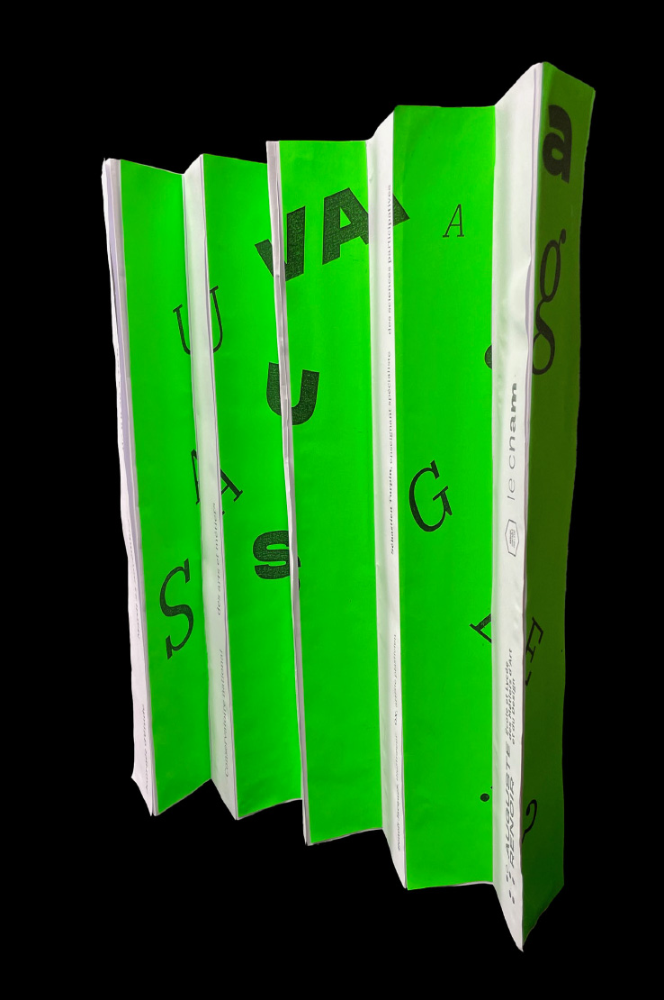
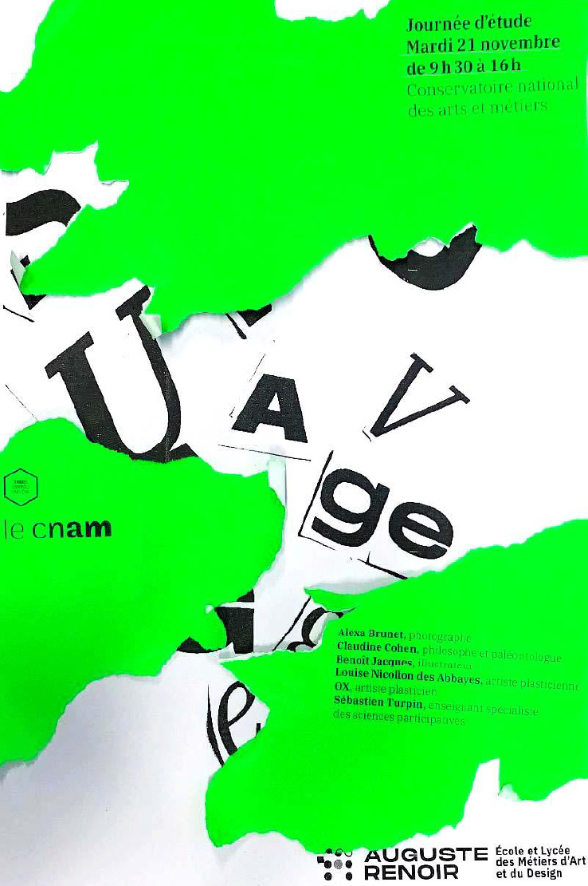
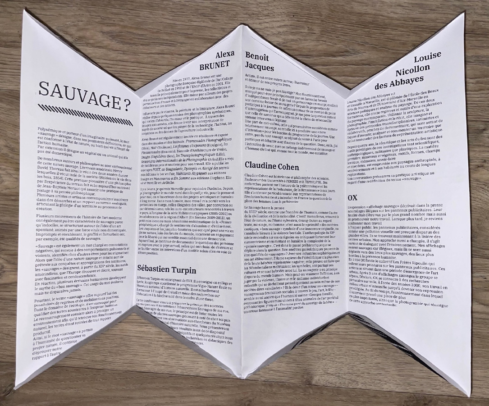
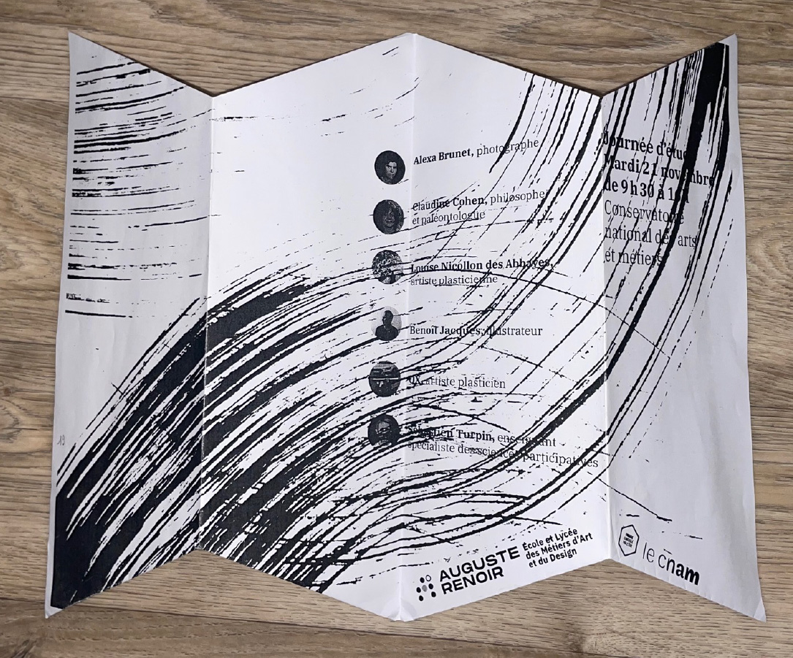

Sauvage
DESIGN MESSAGE/ mise en page - collage - à la main
[2023]
Chaque année, l'ELMAD Auguste Renoir organise avec le Cnam une journée d'étude sur un thême spécifique. Cette année-là, c'est le thême "sauvage" qui a été choisi. Ce projet consiste à la création d'affiches communiquant sur cet évenement en explorant divers principes graphiques.
De ce fait, une première affiche s'axe sur ue impression de cage, d'enfermement de par des rayures qui laissent apparaître soit les textes informatifs, soit un visuel décomposer de part cette altération. La deuxième affiche vient révéler part des déchirures sauvages les informations clés de la JDE.
 Pour communiquer les informations sur les intervenants de cette journée d'étude, un dépliant sur mon principe d'affiche a permis de concevoir un support graphique idéalement "sauvage."
 